Fodder production
{kind=link}
{kind=link}
Introduction
The availability of fodder is one of the limiting factors in animal husbandry. Organic husbandry should be mainly based on the fodder produced on the farm itself. As is the case with humans, there is a direct link between the food and the health of the animals.
- Diverse and balanced mixture of food is a pre-condition for good animal health.
- Grazing and shed feeding both have their advantages as well as disadvantages.
- Fodder cultivation can be integrated into the farm without too much competition with crop production.
- Overgrazing is a major threat to soil fertility.
Food requirements of animals
If farm animals are to be productive (milk, eggs, meat etc.), it is important that they get suitable food in sufficient quantities. If the fodder production of one's farm is limited (which usually is the case), it might be economically valid to keep less animals but supply them with sufficient food. The appropriate quantity and the mix of feed items will of course depend on the type of animal, but also on its main use (e.g. chicken for meat or egg production, cattle for milk, meat or draft etc.). In milk production for example, cows producing milk should be given fresh grass and possibly other feed items of sufficient protein content. On the same diet, draught animals would rapidly become exhausted.
A balanced diet will keep an animal healthy and productive. Whether or not a farm animal receives the appropriate amount and kind of fodder usually can be seen by the shine of its hair or feathers.For ruminants, a majority of the fodder should consist of roughage (grass, leaves). If concentrates or supplements are used (e.g. agricultural by-products and wastes), they should not contain growth promoters and other synthetic substances. Instead of buying expensive concentrates, there are a variety of leguminous plants rich in protein which can be grown in the farm as cover crop, hedges or trees. If mineral content in the available fodder is not sufficient to satisfy the animal's requirements, mineral salt bricks or similar feed supplements can be used as long as they do not contain synthetic additives.
Fodder Cultivation
Grazing or shedding?
In many regions of the tropics, favourable periods with abundant fodder alternate with less favourable periods when there is almost nothing to feed to the animals. But keeping animals means providing fodder throughout the year. Fodder can be produced on the farm as grazing land or as grass or tree crops used for cutting. While grazing requires less labour than shed feeding, more land is needed and appropriate measures to keep the animals away from other crops must be undertaken. Grazing may lead to a lower productivity (milk, meat) but usually is the more favourable option concerning health and welfare of the animals. Shed keeping, however, has the advantage that the dung can be easily collected, stored, or composted and applied to the crops. Whether grazing or shed feeding is the more suitable option will mainly depend on the agro-climatic conditions, the cropping system, and the availability of land. A combination of shed feeding and grazing in a fenced area may be an ideal combination of high productivity and animal friendly husbandry. In extensive grass lands of semi-arid areas, however, grazing may be the only suitable option.
| 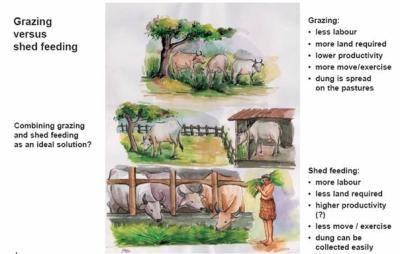 |
| The pros and cons of grazing and shed feeding, and the combination of both systems as a promising option |
| (c) IFOAM Training Manual for Organic Farming in the Tropics
|
Integrating fodder cultivation in the farm
In most smallholder farms, fodder cultivation will compete for space with the cultivation of crops. Whether fodder cultivation (and thus animal husbandry) is economically more beneficial compared with crop production must be assessed case by case. However, there are some options for integrating fodder crops in farms without sacrificing much land. Below are some examples:
- Grass or leguminous cover crops in tree plantations
- Hedges of suitable shrubs
- Shade or support trees
- Grass on bunds against soil erosion
- Grass fallows or green manures in the crop rotation
- Crops with by-products such as paddy straw or pea leaves
Pasture management
The management of pastures is crucial for a good herd management. It is also important to practice appropriate management throughout the year. There are many different types of grasses, and every climatic region has grasses which are specifically adapted to the conditions. In some cases it may be worth considering to till the grazing site and sow grass varieties that are more appropriate to the animal's needs.
Overgrazing is probably the most significant threat to grass land. Once the protective grass cover is destroyed, the top soil is prone to erosion. Degraded pastures or land with little plant cover is difficult to re-cultivate. Therefore, it is important that the use and intensity of grazing on a particular piece of land is appropriate to its production capacity. Sufficient time must be given to a pasture to recover after intensive grazing. Fencing off of areas and rotation of the grazing animals on several pieces of land is a suitable option. This will also reduce infection from parasites encountered while the animals graze.
The intensity and timing of grazing as well as the cutting of the grass will influence the varieties of plants growing in the pasture. If certain weeds are a problem, the organic farmer will have to change his management practises as herbicides can not be used.
Rehabilitation of pastures
Rehabilitate pasture land with improved grass varieties and legumes for higher yield, higher nutritive value and palatability. Grasses can be transplanted or grown from seed. Legume seeds are sown between grass lines. Multipurpose trees can also be planted to provide fodder, fuel and timber.
Fodder and pasture production (for ruminants)
(a) Immediate feeding material for the livestock especially in a zero-grazing system.
(b) Surplus material which can be conserved in form of hay or silage for dry season feeding. The role played by pasture legumes as a feed should also be emphasized because of their high protein content and the fact that they fix atmospheric nitrogen into the soil. Table 2 shows major pasture leys and fodder crops suitable for different Kenyan Agro-ecological zones.
| 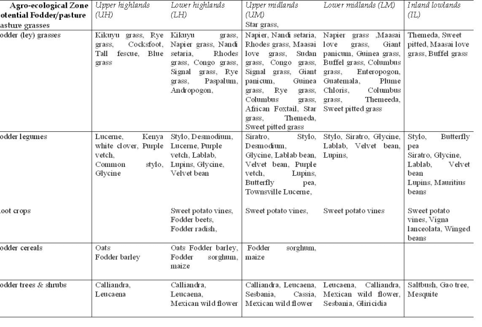 |
Upper Highland Zones
UPPER HIGHLAND ZONES (norm. above 2300 m a.s.l.) - Central and Eastern provinces in Kenya
Also a few fodder trees can be grown in highland areas as Hedges or borders between other crop sections. It is advisable to ask your nearest forestry officer which varieties are more productive in your area.
- Oats (Avena sativa) UH 1,(2)
- Fodder barley (Hordeum vulgare)/m.mat. var.B 106 UH 2
- Fodder barley (Hordeum vulgare)/e.mat. var.Amani UH 3,4
- Lucerne (Medicago sativa)
- Kenya white clover (Trifolium semipilosum) cv. Safari UH 1,2,3
- Purple vetch (Vicia benghalensis) UH 1,2,3
- Calliandra (Calliandra calothyrsus) UH 2,3
- Leucaena (Leucaena leucocephala)
1. Oats (Avena sativa)
Oats are recommended as a fodder crop for high altitude areas of Kenya (over 2100 m above sea level) and may be grown in pure stand or in mixture with vetch.
- Drill oat seeds in rows of 30-40 cm
- When oat is being grown as pure stand 70 - 80 kg of seed per hectare is recommended. When grown as a mixture with vetch 30 - 40 kg per hectare of oats and 20 kg per hectare vetch seed is recommended
- Hand-weed
- Cut at milk stage (4-6 weeks) leaving a stubble height of 5 cm (2 in) from ground level
- Oats is cut at milk stage and wilted before feeding to prevent incidence of bloat
- An average dairy cow needs 70-80 kg of fresh oats to produce 12 kg of milk per day.
- Oats can also be cut and conserved as hay or silage.
- When conserving as silage, oats should be cut when the grain is at milk or dough stage.
- For hay making the oat should be cut when the grain is in the milk stage.
2. Lucerne (Medicago sativa)
Lucerne was one of the first forage crops to be domesticated. It is used as multi-purpose forage, able to be used for both grazing and conservation (hay, silage, meal and forage dehydration). It can be sown as a pure stand or in mixtures with both temperate and tropical grasses. The seed can also be used for human consumption as sprouts.
Lucerne is a crop, which is relatively drought tolerant and will produce yields about in proportion to the water supply. In periods of drought, it will adjust plant density to cope with the availability of water supply. Its taproot is capable of following water supply to considerable depths (up to 8 m, but more commonly 2-3 m). It is well suited to growing under irrigation.
It is usually considered the 'King of Fodders' because it grows throughout the year if soil moisture is available. Protein and calcium levels are high, relative to other fodders, but metabolizable energy (ME) and phosphorus levels are low. ME and phosphorus levels are good in young growth but drop rapidly as the foliage matures. Intake of digestible nutrients by livestock is higher than for most other forages. Level of fibrous tissue is low and this allows rapid passage through the rumen . Lucerne foliage is highly digestible.
Lucerne is highly palatable. There are some cultivar differences in palatability and this is thought to be the result of different protein fractionations.
Bloat is the major limitation to grazing lucerne. A combination of management and control measures can be used to reduce the risk of animals bloating on lucerne. Hungry animals are more at risk of bloat so provide animals with access to a source of roughage before or during grazing. There is usually reduced risk of bloat in mixed stands under rain grown conditions. Access to anti-bloating agents (drenching, in their water supply, rumen capsules or sprayed on foliage) is essential in intensively grazed situations. Enterotoxaemia can be a problem with sheep. This can be controlled by injections.
Dry matter
Under irrigation, lucerne is capable of producing 25-27 t/ha dry matter in the first year of a stand and this can fall to as little as 8-15 t/ha by the third year. Production can be related to plant density, level of disease and pest resistance and winter activity level of the cultivar. Under rain-grown situations it is also determined by availability of soil moisture. Good irrigated stands can produce 20 t/ha of hay per year (allowing for at least one spoiled cut per year). A utilisation figure of 50% is expected under grazed conditions.
Animal production
When green feed is available, daily live weight gains for beef cattle will be around 0.7 kg/head/day compared with 1 kg/head/day on oats, improved tropical pasture and native pasture. This reduced weight gain is a result of the lower energy availability. However lucerne grows throughout the year so, over the full year, supplementing native pasture with lucerne can increase gains from 0.5 to 0.7 kg/head/day at double the stocking rate. Irrigated lucerne can carry a beef cow and a calf on 0.5 to 1 ha on a year-round basis. Supplementing dairy cows grazing tropical grasses with lucerne can raise milk production from 10-12 to 14-15 L/cow/day. This can increase to 20 L/cow/day if the cows are further supplemented with grain to combat the energy deficiency. Sheep numbers can be increased from 6 to 15/ha by supplementing native pasture with lucerne. Irrigated lucerne can carry more than 80 dry sheep equivalents/ha from October to May.
- Year-round production.
- High quality.
- Dual purpose (grazing or conservation ).
- Ability to extract water from deep soil layers.
- Persistent.
- Wide range of climatic adaptation
- Responsive to irrigation.
- Low energy levels.
- Restricted soil adaptation (fertile, well-drained).
- Cannot stand continuous grazing.
- Causes bloat.
- Susceptible to waterlogging .
3. Kikuyu grass (Pennisetum clandestinum)
Suitable Agro-ecological zones: UH 1 (2); LH 1,2
| 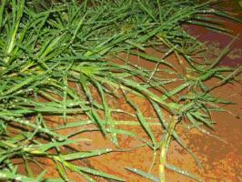 |
| Kikuyu grass |
| (c) J.O Ouda, KARI, Kenya
|
Kikuyu grass (Kikuyu) originates from areas with rainfall of 1,000 to 1,600 mm. Although this native environment mostly does not have a pronounced dry season, the grass has become naturalised in areas with a distinct 5 month dry season. Where soils are suitable, it has become naturalised in areas with rainfall up to 3000 mm and down to 800 mm/yr, and performing well under irrigation in lower rainfall areas. It is moderately drought tolerant, because of deep root system (to >3 m. Most active growth occurs during periods of high humidity. Regular cutting or grazing is necessary to maintain forage quality and palatability of the stand. Management should aim to maximise the amount of leaf, and minimise the amount of stem. Accordingly, stands should be grazed to about 5 cm in height and allowed to regrow to about 15 cm. If pasture height exceeds 15 cm, it is best to mow the sward back to 5 cm to remove stems and mature growth. If well fertilised, kikuyu is very tolerant of constant heavy grazing, although productivity is reduced under such management.
Establishment:
Kikuyu is readily established vegetatively or from seed. Harvested pieces of stolon or rhizome can be planted on a regular grid, or broadcast and cultivated into the soil surface. Subsequent rolling ensures better establishment. Seed is sown at 1 to 2 kg/ha when soil temperature reaches 20degC. Good moisture conditions for several days after sowing are essential for effective establishment.
Yield and utilization:
DM yields are only limited by soil fertility and moisture availability. Under optimum conditions, it is capable of producing 30 t/ha/yr, but is unproductive if not fertilised. Responses of the order of 15 to 30 kg DM per kg N applied are reported. Kikuyu is particularly demanding for N and P. While other nutrients are also essential, historically it has been decline in soil N and P levels that has led to decline in formerly productive stands. Renovation of 'run-down' kikuyu grass should include incorporation of a legume or the use N and P fertiliser. Young growth is very soft and palatable, but older growth is not relished by most animals. The presence of a legume in the sward increases utilisation of the kikuyu. Well-fertilised kikuyu produces very high quality feed with over 25% CP and over 70% digestibility in young leaf. CP levels tend to stay high for 1 or 2 weeks and then decline rapidly, to below 10% within 12 weeks. Digestibility also falls to <50% in the same period. For good silage fermentation, kikuyu needs to be wilted first or have extra sugar added because of its low DM and low water soluble carbohydrate content.Well fertilised pastures are capable of carrying 1.5 to 3.0 adult cattle/ha. Dairy cows can produce over 15 L milk/day, and beef animals over 400 kg/ha/yr weight gain from vigorous kikuyu pastures.
- Productive under heavy grazing.
- Good ground cover.
- Responsive to good fertility.
- Suited to high altitude tropics.
- Requires fertile soils for persistence and production.
- Competitive against many legumes
- Rhizomes can create weed problem.
- Susceptible to 'kikuyu yellows'
Lower Highland Zones
LOWER HIGHLAND ZONES (norm. between 1 800 and 2 300 m a.s.l.)-
Central and Western Kenya
The lower highlands of Kenya has great potential for growing an abundance of fodder crops. In this section of the country there is really no excuse for having hungry livestock. Maize can be grown for silage, and the shorter season barley and oats are also ideal silage crops possibly interplanted with purple vetch, peas or lablab beans. The various grasses can be cut, dried and stored as hay, and suitable fodder trees can produce green leaves year round. Napier grass also grows very well in this zone and can be intercropped with desmodium to produce high yields of premium fodder.
- Kikuyu grass (Pennisetum clandestinum) LH 1,2
- Napier grass (Pennisetum purpureum) in lower places (up to 2000 m)
- Nandi setaria (Setaria sphacelata) LH 1,2,3
- Rhodes grass (Chloris gayana) in lower places up to 2000 m
- Congo grass (Brachiara ruziziensis) LH 2,3
- Signal grass (Brachiaria decumbens) cv. Basilisk LH 1,2,3
- Rye grass (Lolium perenne), not in wheat areas (weed) LH 1,2,3,(4)
- Maize, Barley, oats
- Sweet potato vines (Ipomea batatas) LH 1, 2,3
- Fodder beets (Beta vulgaris)/cv. alba DC LH 1,2
- Common stylo (Stylosanthes guianensis), lower places
- Green leaf desmodium (Desmodium intortum) LH 1,2
- Silver leaf desmodium (Desmodium uncinatum) LH 1,2,(3)
- Lucerne (Medicago sativa)
- Purple vetch (Vicia benghalensis) LH 2,3
- Lablab bean (Lablab purpureus)
- Lupins (Lupinus albus) cv. Ultra LH 1,2
- Lupins (Lupinus angustifolia) LH 1,2
- Calliandra (Calliandra calothyrsus) LH 2,3
- Leucaena (Leucaena leucocephala) 1)
- Mexican Sun flower (Tithonia diversifolia) LH 2,3
Napier grass (Pennisetum purpureum)
| 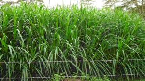 |
| Napier grass |
| (c) J.O Ouda KARI, Kenya
|
i) Varieties
Commonly grown Napier grasses varieties include: Bana grass, Clone 13, French Cameroon, Kakamega 1 and 2.
Napier grass can be established from rootsplits or canes. It can also be planted alone or intercropped with forage legumes
- This involves planting one cane/rootsplit in holes 15-30 cm deep.
- The spacing is 0.5m x 0.5m in areas with over 1400 mm of rainfall. In areas with 900-1400 mm rainfall the spacing is 1 by 0.5 m.
- When cane cuttings are used, 2 of the 3 nodes should be buried into the oil leaving one above the soil surface.
- Forage legumes like (Desmodium uncinatum (silver leaf), Desmodium intortum (green leaf), Stylosanthes guyanensis (stylo) can be intercropped ith napier grass to improve quality of the feed and reduced costs for itrogen fertilizer.
- Legume seeds at the rate of 3 - 5 kg/ha can be drilled along the napier rass rows or in between the rows at the time of planting napier grass.
1) Apply 10 tons/ha of farmyard manure (FYM) at planting. In subsequent year apply same amount preferably in splits after every harvest.
2) Use farmyard manure at planting and apply 5 tons/ha FYM in subsequent years.
3) Apply 60 kg of slurry in furrows at planting followed by split application of the same quantity twice in a year or as frequent as you can after harvesting.
- Weed frequently till full establishment and after each harvest to maintain high productivity bottle top of fertilizer
- Harvest napier when 1m high or at every 6-8 weeks to obtain optimal quality and quantity.
- Maintain a stubble height of 5-10 cm from the ground level at each harvest to avoid weakening of root system which leads to low production in subsequent harvests.
- To increase napier grass yields during the dry season one of the split applications of the recommended rate of nitrogen fertilizer should be done one or two months before end of rain season.
Lablab purpureus
| 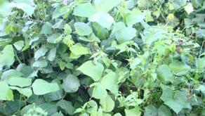 |
| Lablab at KARI Naivasha |
| (c) J.O Ouda, KARI, Kenya
|
- A dual purpose legume can be used with cereals in smallholder systems
- High quality.
- As a green manure crop restores soil fertility
- Drought tolerant once established.
- High grain yields.
- Better root disease resistance than cowpeas
- Has considerable potential as a multipurpose legume in crop-livestock systems where rotations are possible
.
- Annual or short-lived perennial
- Poor frost tolerance.
- Host to pests attacking field beans.
- Indeterminate flowering leading to extended seeding period in current cultivars
In smallholder systems, lablab can be intercropped with maize. The lablab should be sown about 28 days after the maize to avoid severe cereal crop yield depression from competition.
Grasses: Sorghums and millets (Pennisetum glaucum), maize (Zea mays)
- Nutritive value: Leaf has CP content of 21-38%, commonly about 26%. Much lower for stem (7-20%). Grain contains 20-28% CP. Digestibility ranges from 55-76%, commonly >60% (leaves). Grain high in vitamins A, B and C.
- Palatability/acceptability Leaf is highly palatable, but stem has low palatability. Palatability of grain is low to moderate depending on variety.
- Toxicity Leaf does not contain anti-nutritive factors such as tannins. Mixed plantings with forage sorghum prevents the occurrence of bloat. Grain contains tannins, and phytate and trypsin inhibitors. Concentrations vary among varieties. Soaking or cooking reduces the activity of these compounds
- Dry matter Seasonal yields of 2 t/ha leaf or 4 t/ha stem and leaf are common in sub-humid sub-tropics. Dry matter yield is usually higher than for cowpea, particularly under drought conditions. For human nutrition, 2-7 t/ha green pods. In monoculture, 1-2.5 t/ha DM, depending on cultivar.
- Animal production Good weight gain e.g. 350 g/head/day in zebu cattle fed maize stalk-lablab mixture achievable
- Seed production Intermittent flowering and pod production. Grain maturation on the forage cultivars is not uniform but crop landrace types often have more synchronous maturity. High grain yields of 1-2.5 t/ha, depending on cultivar, but when grown on trellises in smallholder systems the grain yields can be far greater. In mixtures with other crops, grain yields 0.5 t/ha. Late seeding varieties may be affected by early frosts. Note: There is some evidence that lablab accessions with light coloured seeds have poor storage potential, which in turn affects seedling vigour and establishment
Sweet potato vines
| 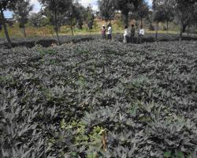 |
| Sweet potato vines |
| (c) J.O Ouda, KARI, Kenya
|
a) Increases growth rate of calves.
b) Promotes rumen development.
c) Good for recently calved and sick animals.
d) Increases milk yield.
The main fodder varieties grown in Kenya include Kiganda, Muibai, Sandak, Mugande, KSP 20, Mafuta, Musinyamu and Helena. Most of the cultivars are suitable as dual purpose.
Plant sweet potato vines (cuttings) 30 cm long at a spacing of 90 cm between rows and 30 cm within rows. Vines can be planted in ridges, flat or in mounds. For fodder production there is no advantage of ridging or mounding during seedbed preparation. Apply composted animal manure before planting or alternatively 2 bag Mijingu Rock phosphate at planting.
- 1) Cut forage at interval 6 - 8 weeks.
- 2) Selectively plucking vines at the length 1/2- 1 metre from the tip at an interval of 3- 4 weeks.
- 3) Those planted on ridges cut the vines extending beyond the ridges.
- Leave a stubble height of 5cm (2in) from the ground level when harvesting.
- Weed whenever weeds appear.
Cut and carry to the cow and feed up to 15 kg fresh material per day, as a supplementary feed to napier grass or other basal feeds.
Lupins (Lupinus albus)
| 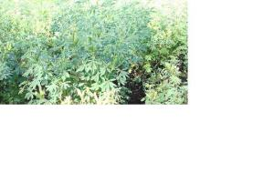 |
| Lupins |
| (c) J.O Ouda, KARI, Kenya
|
- Bitter Lupins: these can be used for soil regeneration and cannot be used for feeding livestock because of poisonous substances (alkaloids) found in the leaves and seeds/pods.
- Sweet Lupins: these poses no dangers of poisoning livestock because of low percentage of alkaloids. Sweet lupins can be grown anywhere in the highlands where rainfall is over 900 mm in a year. There are two cultivars of lupins:
i) Blue lupins (Lupinus angustifolius). Major varieties are:- Uniwhite, Uniharvest, and Unicrop. Unicrop is an early maturing variety. It takes 3 - 4 months to mature. Uniwhite and Uniharvest are late maturing. They take 6-7 months to mature. ii)White Lupins (Lupinus albus) major variety is Ultra. It take 4-5 monthsto mature. Ultra is a good seeder giving up to 6 tons dry seeds per ha per year. While Uniwhite and Uniharvest are high in herbage yields giving about 4 tons dry matter yields/ha. The variety Ultra is the one recommended for dairy production since it is a high seeder and relatively more tolerant to disease.
- Lupin requires well-prepared seedbed which is fine and free weeds.
- Space at 50 cm from row to row and 30 cm within the rows. Use 40-50 kg lupin seed per ha. (2 seeds per hole)
- Apply 10 tons farmyard manure (1 handful of FYM/hole)
- Lupins can also be planted between maize rows at spacing of 30 cm from one plant to the other.
- Weed control - Crop should be kept free of weeds through hand weeding.
- Start to harvest when the pods change colour from green to yellow, and the lowest leaves start falling off.
- After harvesting, lupin pods should be dried and threshed like beans.
- Rotate lupin every 1 - 2 years to avoid soil borne fungal diseases.
- Lupin seeds contain 35 - 40% crude protein and can be used as protein supplement. To prepare the supplement the seeds are crushed and mixed with ground maize at the ratio of 1:3. One (1) kg of this supplement can substitute 1 kg of dairy meal.
- Fresh herbage (leaves) may also be used as a livestock feed.
Upper Midland Zones
Also the upper midland zones of Kenya has a wide variety of suitable and productive fodder crops. Also in this region it is possible and highly advisable to make hay and silage from a large selection of crops. Upper Midland zones often extend into semi arid areas where storage of fodders are even more important for feed security than in the high potential highlands.
Grasses:
- Napier grass (Pennisetum purpureum)
- Nandi setaria ( Setaria sphacelata) in higher places UM 1,2,3,4
- Rhodes grass (Chloris gayana) in higher places
- Star grass (Cynodon dactylon) UM 1,2,3
- Maaai love grass (Eragrostis superba) UM 3,4
- Congo grass (Brachiaria ruziziensis) UM 2,3
- Signal Grass (Brachiaria decumens) cv. Basilisk UM 2,3
- Giant panicum (Panicum maximum) /var. Makueni UM 3,(4)
- Guinea grass (Panicum maximum) UM 1,2,3
- Rye grass (Lolium perenne) UM 2,3,4,(5)
- Columbus grass (Sorghum halepense) UM 1,2, 3,
- Maize, barley, fodder sorghum
- Sweet potato vines (Ipomea batatas) UM 1, 2,3,4
- Siratro (Macroptilium atropurpureum) UM 2,3,4
- Common stylo (Stylosanthes guianensis) UM 1,2
- Desmodium species UM 1,2
- Lablab bean
- Velvet bean (Mucuna pruriens) UM 1,2,3,4
- Purple vetch (Vicia benglanesis) UM 3,4
- Lupins (Lupinus albus) cv. Ultra UM 1,2,3
- Lupins (Lupinus angustifolia) UM 1,2,3
- Leucaena (Leucaena leucocephala) UM1), cv. Peru, K 8, Cunningham UM 2,3,4
- Leucaena (Leucaena tricandria) UM 2,3,4
- Calliandra (Calliandra calothyrsus) UM 1,2,3
Naivasha star grass or Bermuda grass (Cynodon dactylon)
Grows in grassland, lawns and pastures and as a weed in cultivation. Locally dominant along roadsides and overgrazed and trampled areas.
- Widely adapted to soils and climate.
- Tasty.
- High nutritive value when young.
- Excellent ground cover for soil conservation.
- Tolerant of heavy grazing
- Makes useful hay and silage .
- Tolerant of salinity
- Tolerant of flooding
- Low production unless well fertilised.
- Can become a weed in cultivation.
- Difficult to eradicate.
Used in permanent pastures for grazing or cut-and-carry, and for hay and silage production. Provides useful standover or deferred feed. Valuable for soil conservation, as a turf, and as a cover crop in orchards.
Extremely tolerant of heavy grazing, but more productive if correctly managed. Regular grazing and nitrogen fertilisation are necessary to maintain quality. Cut for hay or silage when 30-40 cm tall or every 4-6 weeks, usually when in full bloom. 4 cuttings per year are possible. A stubble height of 5-10 cm under grazing or cutting gives good regrowth and maintains sward density. Renovate by ploughing or discing when sod-bound.
It will stand severe fires due to the extensive rhizome development in most varieties and cultivars.
- Nutritive value: Crude protein varies with age of material and level of nitrogen fertilisation, from about 3 to 9% in old grass, to about 20% in young, well-fertilised grass. Dry matter digestibility varies from 40 to 69% with genotype.
- Palatability/acceptability It is very tasty if kept short in growth and fertilized. Excellent grazing for village geese, ducks, goats, cattle and buffaloes if not trampled too much by these latter heavy beasts. The rhizomes are given to horses.
- Toxicity Some varieties have the potential to produce high levels of prussic or hydrocyanic acid (HCN), especially when high levels of nitrogen are applied. However, instances of prussic acid poisoning in cattle grazing C. dactylon are rare. Although levels of total oxalate of >1% of the DM have been recorded, there is no experience of detrimental effects on grazing cattle. Frosted C. dactylon can cause photosensitization .
- Dry matter Productivity depends on the cultivar used, the time of year and the amount of nitrogen available. DM yields of 1,000-3,000 kg/ha per month are possible in summer and 100-1,200 kg/ha in winter. 'Coastal' yields up to twice as much as most common ecotypes. Annual DM yields are generally of the order of 5-15 t/ha.
- Animal production Live weight gain of cattle ranges from 200-300 kg/ha/yr, or over 700 g/hd/day, when moderate rates of N and other fertilisers are applied and at stocking rate of about 2 or more beasts/ha. Silage made from heavily fertilized, properly ensiled young grass can produce as much milk as corn silage and at a cheaper cost.
- Moisture Usually occurs over an average annual rainfall range of 625-1,750 mm, but down to 550 mm, and up to 4,300 mm. Very drought tolerant by virtue of rhizome survival through drought-induced dormancy over periods of up to 7 months. Tolerates at least several weeks of deep flooding.
Rhodes grass (Chloris gayana)
Rhodes grass is a tufted perennial, usually stoloniferous (varies with genotype), with foliage from 0.5-1.2 m, and fertile tillers from 0.9-2 m tall. It is native to Kenya and many other sub-Saharan Africa countries. Found in open woodland and grassland, riverine and lake margins, and seasonally waterlogged plains, on a wide range of soils. It is excellent for making hay, but can also be grazed in the field. It can grow to 1.5 m high in under good conditions. Rhodes grass is can grow under wide range of rainfall (650 -1200 mm) and can persist under drought.
Uses:
Rhodes grass is less suitable for the cut-and-carry system. It makes good hay if cut at or just before very early flowering. Generally not suitable for silage. Provides fair stand over roughage when mature , due to its greater cold resistance and lower loss of dry leaves. Develops good ground cover and effectively controls erosion once established (needs regular defoliation to maintain cover. Stands develop quickly and can be grazed 4-6 months after planting, although highest production is reached in the second year. Since feeding value declines rapidly with onset of flowering, it is important to maintain the stand in a leafy condition by fairly regular defoliation.
Establishment:
Rhodes grass establishes well from seed sown at a rate of about 10 kg per hectare. It also establishes well from root splits. It rapidly gives good ground cover under good conditions. Can be propagated vegetatively or from seed. A more rapid cover can generally be obtained by planting from seed, usually at sowing rates of 0.5-1 kg/ha. Seed matures 23-25 days after flowering. Mechanically harvested seed can contain a fair proportion of straw. Hand picking is satisfactory for small areas, and this seed needs minimal cleaning. Seed is locally available (Kenya Seed Company stockists, KALRO, ADC farms).
Yield and nutritive value:
DM yields generally range from about (2-) 10-25 t/ha, depending on variety, soil fertility , environmental conditions, and cutting frequency. Yields in the second year may be double those of the establishment year, but this also depends on management and environmental conditions. While yields of 35-60 t/ha DM are reported, these are not the norm. Although Chloris gayana can survive on infertile soil, it is very unproductive, and may eventually die out, particularly if grazed regularly. Young growth is very palatable, but after the plants have seeded they are less attractive.
Animal production:
Can carry about 1-4 beasts/ha depending on pasture productivity. Annual liveweight gains of up to 160 kg/head and 850 kg/ha are achievable. Production declines without a vigorous legume or the use of fertiliser nitrogen.
- Widely adapted.
- Easily established.
- Early nutritive value.
- High salt tolerance
- Tolerant of heavy grazing.
- Few pests or diseases of economic importance.
- Some varieties can suppress nematodes (e.g. cv. Katambora).
- Good seed production.
- Short season of nutritive peak in many cultivars.
- Fluffy seed difficult to sow.
- Not adapted to acid, infertile soils.
- Plants require high fertility to persist.
- Low shade tolerance
Red oat grass (Themeda triandara)
This is perhaps the most widely adapted grass in Africa. It is found all over the continent. Themeda is a perennial grass with clustered erect stems which can grow to 30 m and has compressed basal leaf-sheaths. The leaf blades are upto 30 cm long and 1-8 mm wide. It is common in open and bushed grassland in most parts of Kenya receiving over 600 mm rainfall. Themeda is highly palatable, withstands grazing pressure, resistant to fire hence is highly valuable under extensive grazing
Yield and nutritive content:
Can produce up to 8 t/ha dry matter. The herbage contains 4.7% crude protein and 27.8% fibre
Grows in grassland, lawns and pastures and as a weed in cultivation. Locally dominant along roadsides and overgrazed and trampled areas.
- Widely adapted to soils and climate.
- Palatable.
- High nutritive value when young.
- Excellent ground cover for soil conservation .
- Tolerant of heavy grazing.
- Makes useful hay and silage .
- Tolerant of salinity.
- Tolerant of flooding.
- Low production unless well fertilised.
- Can become a weed in cultivation.
- Difficult to eradicate.
Used in permanent pastures for grazing or cut-and-carry, and for hay and silage production. Provides useful stand over or deferred feed. Valuable for soil conservation, as a turf, and as a cover crop in orchards.
Extremely tolerant of heavy grazing, but more productive if correctly managed. Regular grazing and nitrogen fertilisation are necessary to maintain quality. Cut for hay or silage when 30-40 cm tall or every 4-6 weeks, usually when in full bloom. 4 cuttings per year are possible. A stubble height of 5-10 cm under grazing or cutting gives good regrowth and maintains sward density. Renovate by ploughing or discing when sod-bound.
It will stand severe fires due to the extensive rhizome development in most varieties and cultivars.
Crude protein varies with age of material and level of nitrogen fertilisation, from about 3 to 9% in old grass, to about 20% in young, well-fertilised grass. IVDMD varies from 40 to 69% with genotype.
It is very palatable if kept short in growth and fertilized. Excellent grazing for village geese, ducks, goats, cattle and buffaloes if not trampled too much by these latter heavy beasts. The rhizomes are given to horses.
- Dry matter Productivity depends on the cultivar used, the time of year and the amount of nitrogen available. DM yields of 1,000-3,000 kg/ha per month are possible in long rains and 100-1,200 kg/ha in short rains. 'Coastal' yields up to twice as much as most common ecotypes. Annual DM yields are generally of the order of 5-15 t/ha.
- Animal production Live weight gain of cattle ranges from 200-300 kg/ha/yr, or over 700 g/hd/day, when moderate rates of N and other fertilisers are applied and at stocking rate of about 2 or more beasts/ha. Silage made from heavily fertilized, properly ensiled young grass can produce as much milk as corn silage and at a cheaper cost.
- Moisture Usually occurs over an average annual rainfall range of 625-1,750 mm, but down to 550 mm, and up to 4,300 mm. Very drought tolerant by virtue of rhizome survival through drought-induced dormancy over periods of up to 7 months. Tolerates at least several weeks of deep flooding.
Desmodium
| 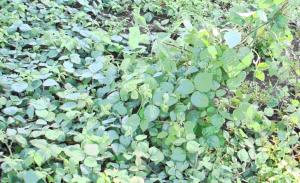 |
| Desmodium |
| (c) J.O Ouda, KARI, Kenya
|
- For cooler regions.
- Long growing season.
- Poor persistence especially under heavy grazing.
- Needs fertile soils.
'Silverleaf' variety is usually grown with grasses that are also cold-tolerant, for example Setaria, although it can combine with other tussock species. Can be grown with creeping grasses but does not persist under heavy grazing.
- Grasses: Setaria sphacelata , Chloris gayana , Pennisetum clandestinum, Paspalum notatum.
- Legumes: Desmodium intortum, Macroptilium atropurpureum.
- Nutritive value: Nutritional value is high although tannin levels can exceed 3%. This can act as 'by-pass' protein increasing the efficiency of digestion, but also slows nitrogen cycling from leaf drop.
- Palatability/acceptability The high tannin levels reduce palatability until stock acquire the taste for it.
- Toxicity No toxicity has been recorded.
- Dry matter Legume yields of 4-7 t/ha and legume/grass yields of 15 t/ha DM have been recorded, with increases of 90-150 kg/ha in soil nitrogen.
Lower Midland Zones
The lower midland zones in Kenya are a lot drier that the upper zones and fodder production is more of a challenge. Still well managed pastures and plantations of Napier grass in the slightly wetter areas or where crops can be irrigated are still possible. We are now entering sorghum and millet zones, and these crops will outperform maize most years. Sorghum and millet are also ideal for silage, and the smaller grasses can still be conserved as hay. For legumes the more shrubby stylosanthes is suitable and can give livestock much needed protein and the soil a boost of nitrogen fixed from the atmosphere.
- Napier grass (Pennisetum purpureum)
- Maasai love grass (Eragrostis superba) LM 3,4
- Guinea grass (Panicum maximum) LM 2,(3)
- Guinea grass (Panicum maximum)/cv. Makueni LM 3,(4)
- Buffel grass (Cenchrus ciliaris) LM 3,4,(5)
- Columbus grass (Sorghum halepense) LM 2,3,4
- Enteropogon (Enteropogon macrostachyus) LM 5,6
- Sweet potato vines (Ipomea batatas) LM 2,3,4
- Sorghum, millet
- Common stylo (Stylosanthes guianensis)
- Siratro (Macroptilium atropurpureum) LM 2,3,(4)
- Glycine (Neonotonia wightii) LM 2,3,(4)
- Lablab (Lablab purpureus)
- Lupins (Lupinus albus) cv. Ultra LM 2,3
- Stylo (Stylosanthes guinanensis) cv. seca LM 4,5
- Shrubby stylo (Stylosanthes scabra) cv. fitroy LM 4,5
- Leucaena (Leucaena leucocephala) 1)
- Mexican wild flower (Tithonia diversifolia) LM 1,2,3
- Sesbania (Sesbania sesban) LM 1,2,3,4
- Gliricidia (Gliricidia sepiuml) LM 2,3,4
Leucaena
Highly valued as ruminant forage and as a fuelwood by subsistence and semi-commercial farmers throughout southeast Asia and parts of central Asia and Africa. Can be planted in hedgerow systems with grass for cattle production. Can also be used as a shade tree over coffee and grown in dense rows as a living fence and used to support vine crops such as pepper and passion fruit. It is a highly researched species for alley farming systems.
Prefers subhumid and humid climates of 650-1,500 mm and up to 3,000 mm annual rainfall and tolerates up to 7 months dry season. Does not tolerate waterlogged soils or extended periods of flooding (>3 weeks).
Extremely tolerant of regular defoliation by cutting or grazing once established.
- Grasses: Can be grown with buffel grass (Cenchrus ciliaris), Elephant grass (Panicum maximum).
- Rhodes grass (Chloris gayana) Normally grown as a hedgerow with grasses or crops grown between hedgerows. Can be grown as a sole species as a protein bank.
- Nutritive value L. leucocephala foliage is noted for its very high nutritive value for ruminant production. Typical values for the edible fraction are 55-70% digestibility, 3-4.5% N, 6% ether extract, 6-10% ash, 30-50% N-free extract, 0.8-1.9% Ca and 0.23-0.27% P. Na levels are generally below requirements for ruminants at 0.01-0.05%. Leaves also contain 2-6% condensed tannins (CT), phenolic compounds which bind and protect dietary protein from degradation in the rumen . Providing that the protein-CT complexes dissociate post-ruminally allowing N absorption in the lower gut, CTs have the potential to increase protein uptake.
- Taste/acceptability L. leucocephala is highly palatable to most grazing animals, especially compared to other forage tree legumes such as Calliandra (Calliandra calothyrsus) and Gliricidia (Gliricidia sepium).
- Toxicity Contains mimosine, a non-protein amino acid that has antimitotic and depilatory effects on animals. Concentrations in young leaf can be as high as 12% and the edible fraction commonly contains 4-6% mimosine. Mimosine is acutely toxic to animals but is normally converted to 3-hydroxy-4(IH)-pyridone (DHP) upon ingestion. DHP is goitrogenic and, if not degraded, can result in low serum thyroxine levels, ulceration of the oesophagus and reticulo-rumen, excessive salivation, poor appetite and low liveweight gains, especially when the diet contains more than 30% leucaena. The anaerobic rumen bacteria, Synergistes jonesii, occur in most countries in the Americas and southeast Asia and completely detoxify DHP and its breakdown products.
- Dry matter: Yields of forage vary with soil fertility, rainfall, altitude, density and cutting frequency from 1-15 t/ha/year. Leaf yield is maximised by cutting at 6-12 week intervals during the growing season . Yields in extensive hedgerow plantings in the dry tropics and subtropics generally range from 2-6 t/ha/year.Very high yields (>15 t/ha/year) in southeast Asia and Hawaii, with plants 0.5-1.0 m apart in rows 1-3 m apart.Fuelwood yields compare favourably with the best tropical trees, with height increments of 3-5 m/year and wood increments of 20-60 m3/ha/year for arboreal varieties.
- Animal production Excellent growth rates of 1.26 kg/head/day for cattle grazing leucaena-buffel grass (Cenchrus ciliaris ) pastures over a 6-month period were reported in Queensland, Australia, although growth rates are more commonly 250-300 kg/head/year (0.7-0.85 kg/head/day). Under irrigation in northwestern Australia, annual live weight gains of up to 1,700 kg/ha/year have been recorded for cattle grazing at 6 head/ha.
- Nutritive value L. leucocephala foliage is noted for its very high nutritive value for ruminant production. Typical values for the edible fraction are 55-70% digestibility, 3-4.5% N, 6% ether extract, 6-10% ash, 30-50% N-free extract, 0.8-1.9% Ca and 0.23-0.27% P. Na levels are generally below requirements for ruminants at 0.01-0.05%. Leaves also contain 2-6% condensed tannins (CT), phenolic compounds which bind and protect dietary protein from degradation in the rumen . Providing that the protein-CT complexes dissociate post-ruminally allowing N absorption in the lower gut, CTs have the potential to increase protein uptake.
- Taste/acceptability L. leucocephala is highly palatable to most grazing animals, especially compared to other forage tree legumes such as Calliandra calothyrsus and Gliricidia sepium .
- Very high nutritive quality for ruminant livestock.
- Highly productive on suitable soils.
- Tolerant of prolonged dry periods and retains leaf into dry.
- Produces multiple products in a wide range of farming systems.
- Poorly adapted to acid infertile soils.
- Poor growth at low temperatures and is susceptible to frosting.
- Relatively weak in seedling stage and slow to establish.
- Mimosine and condensed tannins limit use for non-ruminant livestock.
Pigeon pea (Cajanus cajan)
The genus Cajanus is recognized as having 32 species. Pigeon pea can be used in many parts of the country. Normally in areas with altitudes upto 2000 meters high. A variety of cultivars have been cultivated up to an altitiude of 3000 m high though pigeon pea does not stand frost. It is a major pulse crop of the semiarid tropic. It is used for centuries in intercroping in different parts of the tropics being an excellent source of fodder, food and firewood
Pigeon pea is hardy, widely adaptable and more tolerant of drought and high temperatures than other crops grown in acidic sandy soil and alkaline clay soil. Frost and excess salinity is usually not tolerated. Water logging reduces the yields significantly. It can grow under a wide range of rainfalls but usually requires more than 625 mm. Drought resistant high yielding varieties have been discovered lately.
Thrives best in seed beds prepared by deep ploughing or where the hardpans have been broken by subsoiling ( please see conservation agriculture). Seed is sown from 2.5 cm to 10 cm deep. Actually it is best established by seedling raised in nurseries. It can be sown in rows for inter-row cultivation. It can be intercropped with grasses, maize etc. It can also be utilised as hedge plantation around agricultural lands, homesteads etc. Number of seed per kg is 16000. Sowing rate is about 20-25 kg/ha. For strip planting, sow at a rate of lkg/km of strip.No treatment of seed is necessary even if inoculation improves initial performance. The Pigeon pea has a short life span and should be replanted after 4-5 years. It does not persist if heavily grazed. For cut forage, it should be topped at a height of about 80 cm. The plants should be allowed to develop well before cutting. It can be cut 2-3 times during growing season. Dry matter yields of 25 tons have been achieved without fertilisation and 35 tons when fertilised.
Food: Pigeon pea is best known as human food. Short/duration shrubby varieties can yield 5 - 8 ton of grain/ha when grown as sole crops. It contributes significantly to food security in time of drought and in marginalized areas.
Animal feed: Pigeon pea is an excellent fodder species. It should be collected for hay or milling when a large percentage of the pods are mature because a large part of the nutritive value is contained in the seed. Crude protein values of fresh forage range from 15 - 24%. Its exceptional nutritional value and high productivity can give good live weight gains. In Hawaii cattle weight gains of 280 kg/ha/year in pure pigeon pea grown land has been reported compared to 181 kg/ha/year in mixed grass pastures over a 6 months grazing period. Foliage is retained well over the dry season. Rations of 3-4 kg/day per animal can be given if mixed with high quality hay or fresh Napier grass. However, pigeon pea is deficient in some amino acid and should be used as a mixture with other feed. Under less intensive management system in the Ethiopian conditions a yield of 3-8 GM/ha/year can be expected.
It is more adaptable to high altitude than Leuceana leucocephala, through not to wet conditions. It is a non toxic palatable forage and there is a high proportion of seed in the forage. It is also adaptable to wide range of soil types.The farmers have adapted Pigeon pea quite well in many areas.
Sesbania (Sesbania Sesban )
| 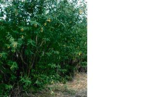 |
| Sesbania |
| (c) KARI Publications, Kenya.
|
Sesbania is a nitrogen fixing species providing good mulch, microclimate improvement and soil stabilisation. Mainly useful for soil conservation however sheep and goats readily cats the leaves which are quite rich in protein. It grows on a wide range of soils including heavy water logged soils and moderately infertile soil. It does not require inoculation.
Sesbania sesban is a prolific producer of seed. Direct sowing in rows or crops along outer edges of terraces and between coffee plants. Trees can be trimmed for fodder and mulch at beginning of the rains. The tree grows fast and is short lived. The seedlings are more vigorous than that of Leuceana. Sowing up to 50 seeds per meter is recommended for continuous hedge at 0.5 meter spacing. Seeds per kg are 55,000-110,000 .
Sesbania is more digestible (60-75%) than Leuceana (60-65%) and Calliandra (50-60%) but not as drought tolerant as Leuceana. The protein content of Sesbania leaves varies from 17-30% and they are not toxic and can be fed to all species of livestock either green or dried. However the production of leaves are quite low and Sesbania does not respond well to frequent cutting. Should be cut over 1.2 meter height. Like Cajanus cajan the life span of Sesbania is short and in order to be productive the stands should be replanted within 4-7 years
Guinea grass (Panicum maximum)
Widely naturalised in the tropics. Grows naturally in open grasslands, usually under or near trees and shrubs, and along riverbanks.
| 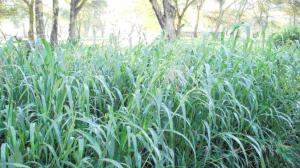 |
| Guinea grass |
| (c) J.O Ouda, KARI, Kenya
|
Long term pasture if fertility maintained. Ideal for cut-and-carry, although bristly types may cause discomfort to forage collector. Suited to agroforestry due to shade tolerance. Reasonably palatable when mature, providing good roughage for use in conjunction with urea molasses licks. Has been used successfully for making silage and hay .
TM varieties are mostly grown in areas with annual rainfall above 1,000 mm, while S varieties are planted in areas with 800 mm or less. Drought tolerance varies among cultivars, although generally they do not tolerate dry periods longer than 4 or 5 months. Tolerant of short term flooding by moving water.
Combines well with twining legumes under light grazing. As these legumes are generally less tolerant of grazing than the grass, the legume component declines and weeds increase under heavier grazing. P. maximum should not be planted with less palatable grasses. This leads to selection and decline of the P. maximum . It can be grown successfully under open forest or plantation due to shade tolerance.
Grows well with legumes such as Neonotonia wightii , Stylosanthes guianensis and Leucaena leucocephala. May also be grown with Medicago sativa (Lucerne).
As guinea grass is reasonably palatable, spread is minimal or slow under grazed conditions. It is a very effective coloniser in ungrazed areas, particularly where some form of soil disturbance has occurred.
P. maximum spreads along water courses and ungrazed roadsides, and has been listed as a weed in many countries. It is a major weed in sugar-cane fields, due to its ability to grow under shaded conditions.
- Nutritive value IVDMD from 64% (2 week regrowth) to 50% (8 week regrowth). Crude protein from 6-25% depending on age and N supply. Seasonally, CP values in 12 week old regrowth commonly range from 5-10%, P levels from 0.15-0.18%, Ca from 0.6-0.8% and Na from 0.07-0.12%.
- Palatability/acceptability P. maximum is well eaten by all classes of grazing livestock, with particularly high intakes of young leafy growth. It is also used for feeding fish in Vietnam.
- Toxicity In South Africa, it is suspected of causing "dikoor" in sheep, a photosensitisation disease, perhaps linked to smut infection. The plant is also said to cause fatal colic if eaten too wet or in excess. 'Petrie' has been implicated in hyperparathyroidism ('big head') in horses, and occasionally nephrosis or hypocalcaemia in ruminants, due to oxalate accumulation.
- Dry matter Commonly (10-) 20-30 (-60) t/ha Dry Matter, depending on variety and growing conditions (particularly if high levels of N applied).
- Animal production Can achieve up to 0.8 kg/hd/day LWG and up to 1,200 kg/ha/yr LWG (commonly 300-500 kg/ha/yr LWG ) depending primarily on stocking rate and N fertiliser rate.
- Very leafy.
- High quality feed.
- High production potential.
- Readily eaten by all stock.
- Suited to grazing and cutting.
- Drought tolerant.
- Early season growth in some lines
- Requires fertile soils.
- Intolerant of waterlogging.
- Intolerant of heavy grazing
- Becomes stemmy if not cut or grazed frequently.
Sorghum (Sorghum bicolour)
| 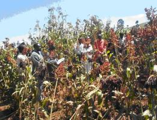 |
| Sorghum bicolor |
| (c) J.O Ouda, KARI, Kenya
|
Uses/applications:
The various types of hybrids have different agronomic features and uses. Sweet sorghum hybrids tiller well, are tall with fine stems, flower early and have low prussic acid. Sweet sorghum x Sudan grass hybrids are more compact and leafy with more juicy and sweet stems. Prussic acid levels are low. They grow rapidly but some cultivars selected for later flowering are easier to manage as they remain leafy for longer. Sweet sorghum x sweet sorghum hybrids are tall, late flowering with high sugar levels in their stems. Prussic acid levels are high.
Good drought tolerance and best in semi-arid conditions with 500-800 mm rainfall. Poor tolerance of flooding and have a greater incidence of leaf diseases in high rainfall districts.
Legumes: Lablab purpureus and cowpeas (Vigna unguiculata).
- Nutritive value Nutritive value greatly depends on soil fertility. It provides good feed only on good soils.
- Palatability/acceptability Moderately palatable and digestible when young. The sweet sorghum hybrids keep a higher free sugar content in the stem and are more suitable as stand-over feed into winter or the dry season.
- Toxicity Leaves can be poisonous to grazing livestock due to hydrogen cyanide (prussic acid), especially in young dark-blue coloured regrowth after a dry spell. Having supplement blocks containing sulphur available will reduce the risk of prussic acid poisoning.
Dry matter yields can be up to 30 t/ha/yr.
- Easy establishment and rapid growth.
- Very productive on fertile soils.
- Pioneer species with other perennial grasses or legumes.
- Demands high soil fertility.
- Prussic acid poisoning.
- Seed cannot be distinguished from that of S. halepense
Inner Lowland Zones
The inner lowland zones are semi arid and hot and grade cows or milk goats are not normally kept in these areas. Mostly suited for beef production These are mostly pastoral areas where pastoralists graze their flocks over large areas and retreat to wetter pockets during times of drought. In many cases natural pasture has been eradicated by overgrazing and land degradation has set in as a result. Overgrazing puts the balance between grass and bushes to the bush side. Bush or shrub encroachment can finally finish the grazing potential. shrub encroachment, in its first stage has poisonous or bitter herbs establishing and thrive abundantly, which are not eaten by livestock, leading to some sort of "green degradation". In AEZ 6 (see agro-ecological zones) the eradication of grass by overgrazing promotes at first dwarf shrubs (dwarf shrub encroachment), then in the better subzones thorny low shrubs grow up. The grazing potential has severely decreased, only goats as browsers remain. In a final stage, due to overuse and soil denudation, the shrubs disappear and desertification becomes evident. Reseeding fenced plots before it is so bad is now practised. Another problem that is aggravating not only the cropland but even the grazing land is soil degradation. The animals take in nutrients through the vegetal material they ingest and release the same through dung. Farmers need to utilize this dung on their fields in order to replenish the depleted soil nutrients
- Maasai love grass (Eragrostis superba) and other Eragrostis species IL 4,(5)
- Buffel grass (Cenchrus ciliaris) IL 4,(5)
- Sweet potato vines (Ipomea batatas) L 2,3,4
- Vigna lanceolata L 2,3
- Winged beans (Psophocarpus tetragonolobus) L 2,3
- Common stylo (Stylosanthes guianensis) L 1,2
- Butterfly pea (Clitoria ternatea) L 1,2,3,(4)
- Siratro (Macroptilium atropurpureum) L 2,3,(4)
- Glycine (Neonotonia wightii) esp. on heavy soils L 1,2,3
- Townsville stylo (Stylosanthes humilis) L 2,3
- Mauritius beans (Mucuna aterrima) L 4,5
- Saltbush (Atriplex nummularia) IL 4,5,6
- Gao tree (Acacia albida) IL 4,5,(6)
- Mesquite (Prosopis juliflora) IL 5,6
Cenchrus ciliaris (African foxtail grass)
Mainly used as a permanent pasture, but can be used for hay or silage. Not suited to short-term pasture because too difficult to remove and binds nutrient.
| 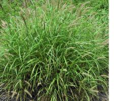 |
| Cenchrus ciliaris |
| (c) J.O Ouda, KARI, Kenya
|
The most drought tolerant of the commonly sown grasses, Cenchrus ciliaris occurs naturally in areas with average annual rainfall from as low as 100 mm up to about 1,000 mm, but most commonly between 300 and 750 mm. Under cultivation, it has been grown in areas with rainfall as high as 2,900 mm, although this is exceptional. Winter rainfall should be < 400 mm. Does not survive prolonged waterlogging , particularly in cold season, but can stand up to 5 days of flooding with negligible adverse effect. Losses of 15-70% occur after 20 days of flooding. Tolerance of flooding varies with ecotype, the taller varieties appearing to be more flood-tolerant.
Slow to establish and grazing may need to be delayed 4-6 months after sowing, and up to 9-12 months, depending on establishment conditions. Very tolerant of regular cutting or grazing. Since quality declines rapidly with age, should be cut or grazed at least every 8 weeks. Leafiness is maintained by low cutting at about 7 cm.
Cenchrus ciliaris is a particularly aggressive grass, by virtue of its extensive root system competing with associated species for water and nutrients. It also appears to be allelopathic (suppression of other species by exudation of phytotoxic chemicals that inhibit germination and growth of other plants).
- Grasses: Chloris gayana, Digitaria spp, Panicum maximum.
- Legumes: Leucaena, Stylosanthes
Feeding value
- Nutritive value CP values are mostly in the range of 6-16%, and IVDMD and CP digestibility from 50-60%, depending on age of growth, cultivar, and soil fertility (incl. fertiliser use). P levels are usually higher than in other tropical grasses and range from 0.15-0.65% in the DM.
- Palatability/acceptability Generally less palatable than P. maximum but more palatable than most Setaria spp .
- Toxicity Oxalate levels can cause 'big head' (Osteodystrophia fibrosa) in horses, and oxalate poisoning in young or hungry sheep. However, with soluble oxalate levels of 1-2% in the DM, there is rarely a problem with mature ruminants.
- Dry matter Yields depend greatly on soil fertility and growing conditions, but are mostly in the range of 2-9 t/ha DM, and under ideal conditions, up to 24 t/ha DM
- Animal production Can carry up to 1 steer or 6 sheep/ha, depending on rainfall and soil fertility. Cattle can gain up to 180-200 kg/hd/yr at 2 ha/beast on fertile soils under good growing conditions.
- Persistent.
- Very drought tolerant.
- Quick to respond after rain.
- Widely adapted.
- Needs high fertility for production.
- Establishment is difficult on clay soils.
- Will not survive prolonged flooding or waterlogging
- Can cause 'big head' in horses.
- "Fluffy" seed is difficult to sow.
- Threat to certain sub-humid to arid environments.
Production and management of selected pasture and fodder leys
- Direct sowing
- Undersowing
- Oversowing
Direct Sowing:
This is the establishment of pasture grasses without a nurse or cover crop. It consists of sowing seed in a fine, firm and weed-free seedbed. Pasture should be sown into land that has been under crop for 2 or more years. For example Lucerne which is slow to germinate, is often sown together with barley or oats (undersowing). The barley or oats is then harvested early for silage or direct feeding to give room for the Lucerne to grow when it is ready
- On previously cropped land, plough towards the end of the proceeding dry season ploughing shortly before the rains are expected and harrowing for weed control.
- On virgin land, 1 ploughing and 2 harrowings may be required to make a good seedbed.
- Sow as early in the rainy season as possible. In bimodal rainfall areas sowing is preferred in the short rains so that annual weeds are soon eliminated.
- Seeds should be sown close to the surface in order to get in contact with moist soil so as to enhance germination. Seeds should not be buried deeply since initial vigour is not sufficient to push through a heavy cap of soil.
- Grass seeds can either be broadcasted or drilled in rows 30-40 cm apart.
- Mix the seeds with saw-dust, rough sand or phosphate fertilizer for even distribution. It is not recommended to sow grass or lucerne seeds mixed with the fertilizer as scorching of seed by the fertilizer can easily occur.
- Sowing of grass seeds is effectively done with a wheat drill. Hand sowing is recommended for smaller acreages where close supervision and attention to details is possible.
- Immediately after sowing, the seedbed should be compacted to enhance germination of the grass seed by improving contact with the soil. This can be done by use of tree branches or even by trampling by foot on small plots. In mechanized farms a roller can be used.
Fertilizer used at planting
This is the establishment of an improved pasture species into a natural grassland e.g. non-ploughable land. The technique improves the quality of the natural pasture by introducing high quality herbage forage.
i) overgraze the natural pasture field then broadcast the improved pasture species (grass or a legume seed).
ii) overgraze the natural pasture field then harrow or ox-plough or hand hoe and broadcast the improved pasture species (grass or legume seed).
- Seed of improved species are mixed with fertilizer and broadcasted on the overgrazed area at the rate of 10 kg grass seed or 2-3 kg of legume seed (Desmodium or Stylosanthes) with 1-2 bags of Mijingu rock phosphate per hectare
- graze heavily for one or two days to ensure that seeds come in contact with soil due to cattle trampling
- then remove the livestock from the field to allow the new species to establish.
- During establishment year graze lightly to avoid grass being uprooted.
How to manage the pasture
Good management practices are just as important as proper establishment techniques. Pasture establishment involves a considerable investment and returns depend on how efficiently the pasture can be managed and converted into milk or meat. Things to look into are:-
a) weed control
b) grazing management
c) fertility management
Weed control
- Control weeds during the first year by either (a) hand weeding or (b) by use of herbicide In subsequent years, keep fields clean by slashing, hand pulling or mowing of weeds.
Grazing management
During the establishment year grasses reach early flowering stage 3-4 months after planting. At this stage the plant is not firmly anchored in the soil and therefore it is usually advisable to make hay rather than graze the pastures to avoid the risk of the cattle pulling out the young shoots.
- If grazing must be done during the establishment year, it should be light enough to enable the plant to establish firmly in the soil.
- For maximum benefits use the pasture not later than the start of flowering stage. Graze or cut at interval of 4 to 6 weeks leaving stuble height of 5 cm.
- Graze animals when the grass is at the early flowering stage by moving animals from paddock to paddock.
- One animal will need 1-2 acres of improved pasture per year in areas receiving over 900 mm rainfall.
- Conserve excess pasture in form of hay for dry season feeding.
- If you are zero-grazing your animal, note that an average sized dairy cow requires 80 to 100 kg (about 3 gunny bags) of freshly cut grass (in early flowering stage) per day.
- A cow in mid lactation period will produce on average 5-7 kg milk per
Fertility management
Many areas in Kenya show symptoms of deficiencies in the grass fields. Some of the more common deficiencies are copper, cobalt and selenium deficiencies, but also nitrogen, phosphorous and potassion deficiencies are common. If your pastures do not look green and healthy during rainy seasons, it will pay to get a soil sample analyzed to see what is missing. Any deficiency can severely lower the production of pastures and cropland.
Production and management of fodder trees and shrubs
Production of seedlings and planting techniques are practices well known by farmers in Ethiopia. Therefore, this manual will not deal on these issues. The problem related to forage trees are those observed after they are planted out in the field. There are certain simple but very critical management techniques, which should be applied to maximise the foliage yield from fodder trees. Weeding is an essential cultural practice in the establishment process of fodder trees to which little attention is given. Weeding is often not done because the benefits from the practice is least understood by farmers! Moreover, it is also given less priority owing to the fact that other pressing work in the agricultural calendar, demand much of the farmer's labour and time.
- minimises the competition for moisture and nutrients thereby boosting early growth and vigour of the seedlings.
- reduces the risk of fire
- facilitates percolation of water and soil aeration necessary for proper plant development.
- In forestry areas bare soil accumulate heat during the day releasing it at night. This reduces frost damage in frost prone areas
The trees should enter the dry season completely free from feed.
Wherever possible application of manure helps in the recycle of soil nutrients. The replenished soil nutrients secure fast growth and an increase in high quality fodder production. It is recommended that, manure should be applied on land used for growing forage trees during rainy season, If applied in dry period it should be well watered to improve its utilisation by the plants.
Newly planted multiple purpose tree (MPT) seedlings and young trees are very sensitive to damage by animals and have to be protected against livestock. In general, MPT and cultivated forage crops should be protected from livestock in similar ways as much as is done for any cash crop during the establishment period. "i'rces need protection from livestock in the first 2 - 3 years of establishment. In many highland farming areas livestock are herded in the rainy season to prevent damages to crops but are left free to graze during the dry season (post harvest time). It is during the dry season that heavy damage is inflicted to seedlings through browsing and trampling,
The most common way to protect trees against livestock is by fencing. Various materials can be used for fencing. The best is the easiest available and most inexpensive local materials such as thorny branches, sticks and poles.
Live fences can also be used by planting Euphorbia and other non palatable species or thorny species like Erithryna as protection. This method is more permanent and requires less maintenance and labour than when using fencing material. Controlled rotational grazing, introduction of fodder banks and zero grazing system are also practices that can help in replacing the loose traditional post harvest grazing which is the cause to the damage of planted fodder trees.
In the establishment of multipurpose trees for forage production it is critical to identify and use the most suitable species for adaptation for the different agro ecological zones. Likewise, for high quality optimal yield of forage from planted fodder trees proper harvesting techniques should be used so that the leafy portion is higher than the stemy portion in the biomass harvested. Fodder trees need to be harvested timely and regularly for higher and sustainable yield. It must also be understood that there are different harvesting method for the different fodder species. Thus, as fodder species are specific to the harvesting method they require, one should learn and know the methods that are practised under different circumstances.
Coppicing
Coppicing is cutting the stem or back of a tree at height of 10 - 50 cm from the ground to stimulate production of new shoots, When carrying out coppicing, the following points must be observed:
- the cut should be at angle
- the bark should not be damaged
- only the best shoot should be left when arising from the new stump, when reaching a length of approximate. 1 m.
- young coppice should be kept weed free
- coppicing should be done in the early rainy season
Species suitable for fodder production and being promoted by SDDP to contract farmers are not good at coppicing and might even die if they are cut too low. They are more suitable for pollarding and side pruning Species used by SDDP, which can stand coppicing, are Calliandra and L.leucocephala. They are both lower altitude species.
Pollarding
Pollarding is cutting back of the crown at a height of 1.5 to 2 m. The main purpose of pollarding are to harvest the branches and leaves to stimulate growth of a new palatable fresh leaves to get well formed productive crown to reduce negative shading effects on the adjacent crops. When pollarding is carried out to maximise the production of fodder, it is better to pollard lower down the tree to facilitate access. Not all species can withstand pollarding. Species which can withstand pollarding and promoted by SDDP are Grevillae robusta and Erythrina abyssinica.
Side pruning
- reduce shade on the agricultural branches
- harvest the branches for fodder, fuelwood etc.
Of the fodder trees mentioned in this manual, Tree Lucerne, Cajanus cajan and Leuceana have been widely accepted by farmers. Sesbania is accepted despite the fact that its low leafy biomass production. However for water logged black cotton soil, Sesbania is still one of the best fodder trees. Calliandra calothyrsus has so far been a disappointment when it comes to production and should not yet be promoted to farmers. Leuceana pallida is mentioned as one possible variety to promote as it performs better than Leuceana leucocephala on lower rainfall areas 500 -1000 mrn and because of its' ability to withstand drought.
Information Source Links
- Ouda JO (2001). Feeding and care of livestock In: Managing dryland resources. A manual for Eastern and Southern Africa. International Institute for Rural Reconstruction (IIRR). ISBN 9966-9705-2-5.